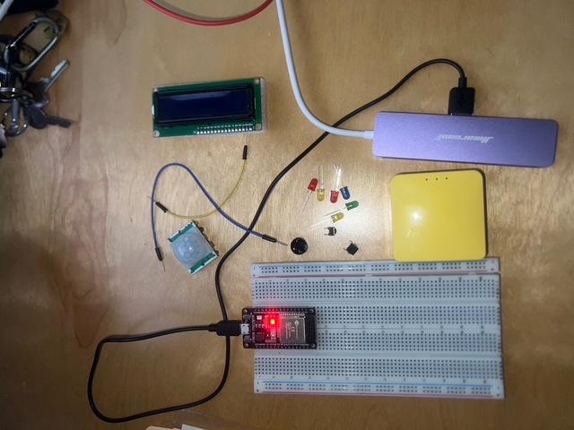
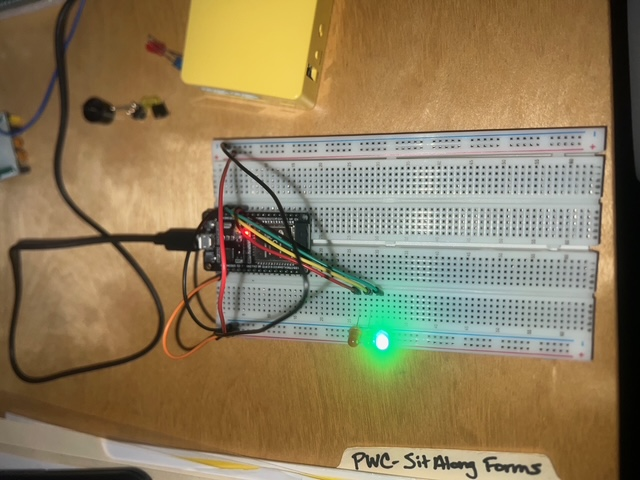
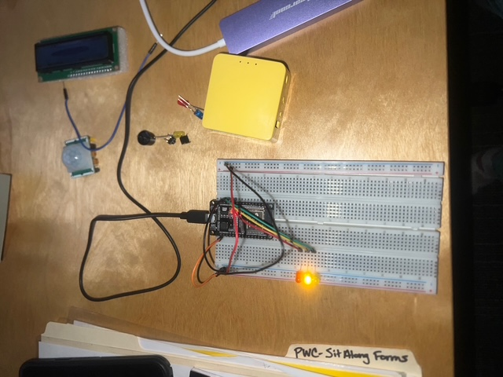
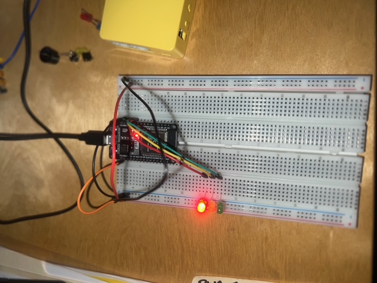
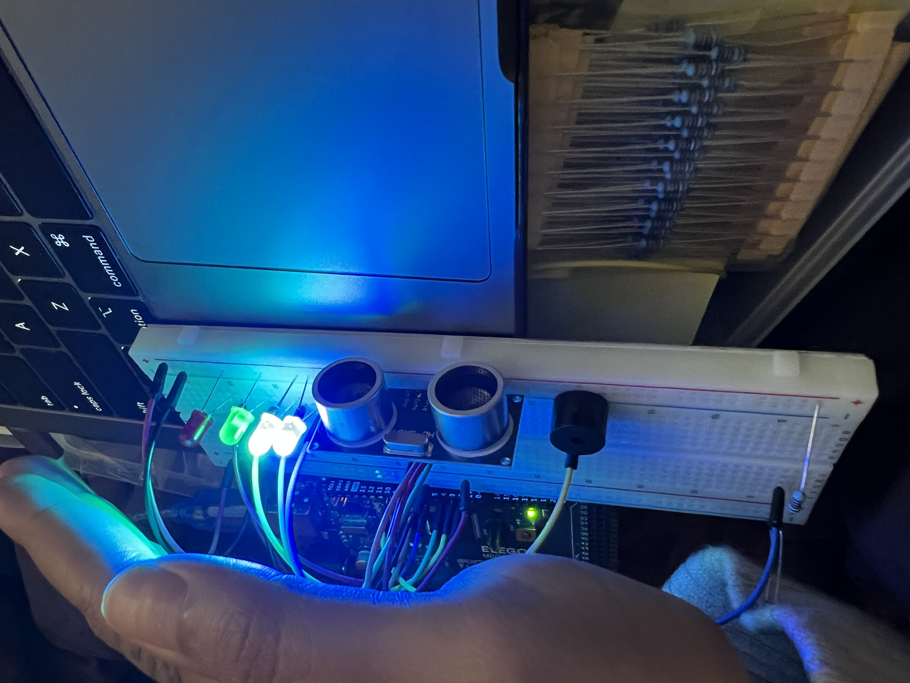
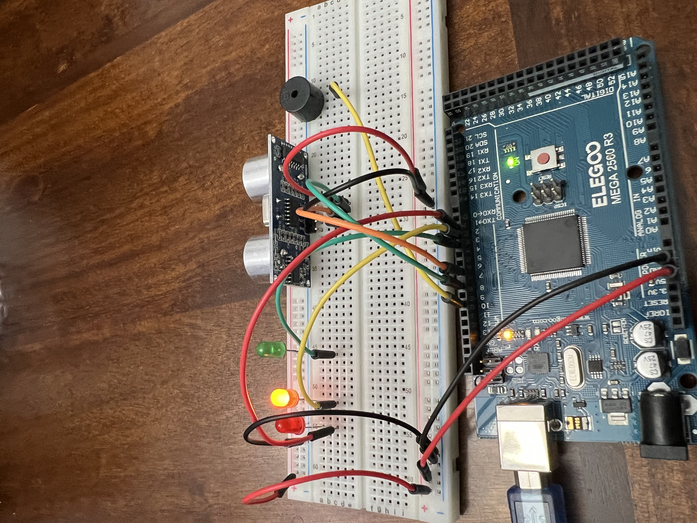
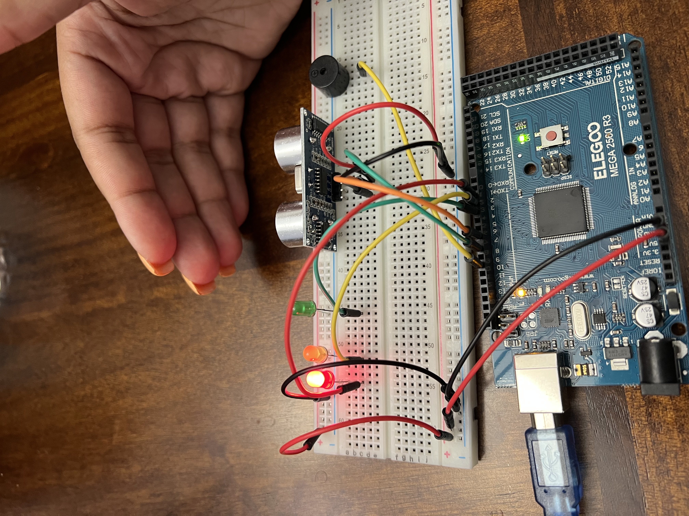
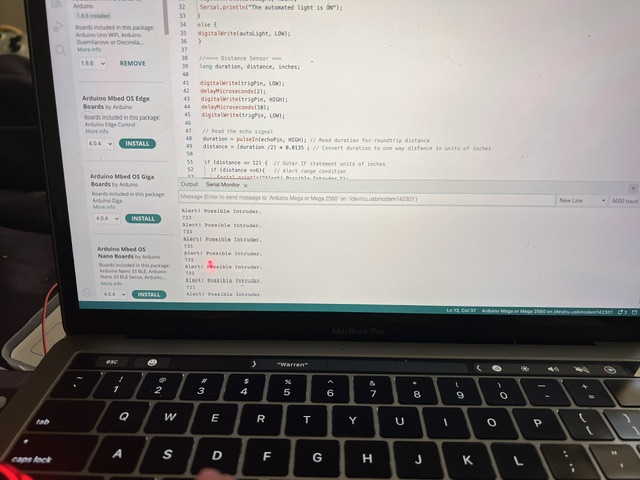

Projects
Pedestrian Walk Signal and Red Light Simulation
Tools Used: ESP32, Breadboard, Jumper Wires, LEDs, Push Button, Buzzer, LCD Display, Arduino IDE
This project focused on designing an IoT-enabled traffic light controller that simulated a two-way traffic system with pedestrian crossing functionality. I used LEDs to represent standard traffic behavior, including green for go, yellow for slow down, and red for stop. Once the red light was active, the system signaled that pedestrians could safely walk.
The project required implementing timing logic to control how long each traffic state remained active and ensuring the system returned to its default cycle after pedestrian activity. A push button was used to simulate the pedestrian crossing trigger, while the overall design reflected how real intersections coordinate vehicle and pedestrian movement safely.
This project strengthened my understanding of IoT concepts by combining hardware components with software logic. It also helped build experience in Arduino programming, simulation-based design, debugging, and testing a smart traffic control system.
What I learned:
- How to connect physical components with smart system logic
- How to program timing sequences for multiple traffic states
- How to integrate pedestrian crossing behavior into a controller design
- How to test and troubleshoot embedded system logic
Project Images




Project Demo Video
IoT Smart Home Automation and Security System
Tools Used: ESP32 or Arduino, Breadboard, Jumper Wires, LEDs, Buzzer, Ultrasonic Sensor, Photocell (LDR), IR Sensor, DHT11, Arduino IDE, Excel
This project involved building a smart home automation and security prototype that used multiple sensors to monitor environmental and security-related conditions. The system was designed to simulate how connected home technology can automate responses and improve safety inside a home environment.
Different sensors supported different system actions. An ultrasonic sensor was used to monitor proximity for possible intruder activity. A photocell helped trigger lighting behavior based on darkness levels. An IR sensor acted like a door status sensor, while the DHT11 measured temperature and humidity for environmental monitoring.
LEDs were used to show different system states, such as normal, caution, and danger. A buzzer supported alarm behavior when the system detected an abnormal or unsafe condition. This project required integrating multiple inputs, organizing logic for different system responses, and understanding how smart systems collect and act on sensor data.
What I learned:
- How sensor-based automation works in IoT environments
- How to connect multiple sensors to a microcontroller
- How to use LEDs and alarms to communicate system status
- How to collect, interpret, and respond to hardware data
Project Images





Network Connectivity and Troubleshooting Project
Tools Used: Command Prompt, Ping, Tracert, TCP/IP Analysis, Microsoft Word, Excel
This networking project focused on analyzing connectivity, identifying communication issues, and documenting troubleshooting steps. I used common network diagnostic commands to test how systems communicated across a network and to identify where issues could occur.
The project helped strengthen my understanding of TCP/IP fundamentals, connectivity testing, and practical troubleshooting methods. It also required documenting results clearly and organizing findings into a formal report.
View Networking ProjectSlack Officer Check-In Workflow
Tools Used: Slack Workflow Builder, Airtable, Data Structuring, Workflow Logic
Designed a workflow system to track officer check-ins using Slack automation. The workflow was structured to capture operational details such as officer name, phone number, vehicle information, and assigned zones.
This project focused on process improvement, accountability, and real-time communication support for operations teams. It also demonstrated how automation can improve visibility and reduce manual tracking tasks.